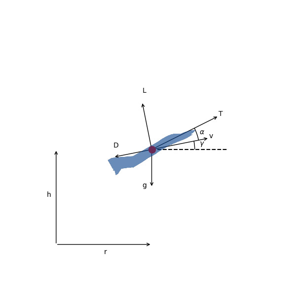
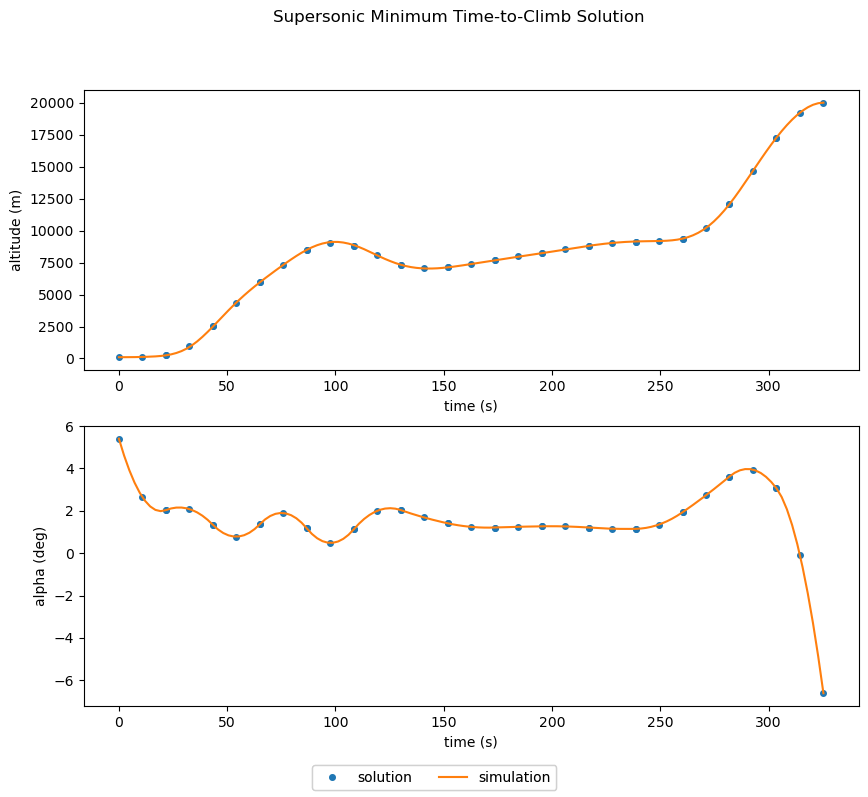

Supersonic Interceptor Minimum Time Climb#
This example is based on the A/C Min Time to Climb example given in chapter 4 of Bryson [Bry99]. It finds the angle-of-attack history required to accelerate a supersonic interceptor from near ground level, Mach 0.4 to an altitude of 20 km and Mach 1.0.

The vehicle dynamics are given by
(62)#\[\begin{align}
\frac{dv}{dt} &= \frac{T}{m} \cos \alpha - \frac{D}{m} - g \sin \gamma \\
\frac{d\gamma}{dt} &= \frac{T}{m v} \sin \alpha + \frac{L}{m v} - \frac{g \cos \gamma}{v} \\
\frac{dh}{dt} &= v \sin \gamma \\
\frac{dr}{dt} &= v \cos \gamma \\
\frac{dm}{dt} &= - \frac{T}{g I_{sp}}
\end{align}\]
The initial conditions are
(63)#\[\begin{align}
r_0 &= 0 \rm{\,m} \\
h_0 &= 100 \rm{\,m} \\
v_0 &= 135.964 \rm{\,m/s} \\
\gamma_0 &= 0 \rm{\,deg} \\
m_0 &= 19030.468 \rm{\,kg}
\end{align}\]
and the final conditions are
(64)#\[\begin{align}
h_f &= 20000 \rm{\,m} \\
M_f &= 1.0 \\
\gamma_0 &= 0 \rm{\,deg}
\end{align}\]
The ODE System: min_time_climb_ode.py#
The top level ODE definition is a Group that connects several subsystems.
import openmdao.api as om
from dymos.models.eom import FlightPathEOM2D
from dymos.examples.min_time_climb.prop import PropGroup
from dymos.models.atmosphere import USatm1976Comp
from dymos.examples.min_time_climb.doc.aero_partial_coloring import AeroGroup
class MinTimeClimbODE(om.Group):
def initialize(self):
self.options.declare('num_nodes', types=int)
self.options.declare('fd', types=bool, default=False, desc='If True, use fd for partials')
self.options.declare('partial_coloring', types=bool, default=False,
desc='If True and fd is True, color the approximated partials')
def setup(self):
nn = self.options['num_nodes']
self.add_subsystem(name='atmos',
subsys=USatm1976Comp(num_nodes=nn, h_def='geodetic'),
promotes_inputs=['h'])
self.add_subsystem(name='aero',
subsys=AeroGroup(num_nodes=nn,
fd=self.options['fd'],
partial_coloring=self.options['partial_coloring']),
promotes_inputs=['v', 'alpha', 'S'])
self.connect('atmos.sos', 'aero.sos')
self.connect('atmos.rho', 'aero.rho')
self.add_subsystem(name='prop',
subsys=PropGroup(num_nodes=nn),
promotes_inputs=['h', 'Isp', 'throttle'])
self.connect('aero.mach', 'prop.mach')
self.add_subsystem(name='flight_dynamics',
subsys=FlightPathEOM2D(num_nodes=nn),
promotes_inputs=['m', 'v', 'gam', 'alpha'])
self.connect('aero.f_drag', 'flight_dynamics.D')
self.connect('aero.f_lift', 'flight_dynamics.L')
self.connect('prop.thrust', 'flight_dynamics.T')
Building and running the problem#
In the following code we follow the following process to solve the problem:
import matplotlib.pyplot as plt
import openmdao.api as om
import dymos as dm
from dymos.examples.plotting import plot_results
#
# Instantiate the problem and configure the optimization driver
#
p = om.Problem(model=om.Group())
p.driver = om.pyOptSparseDriver()
p.driver.options['optimizer'] = 'SLSQP'
p.driver.declare_coloring()
#
# Instantiate the trajectory and phase
#
traj = dm.Trajectory()
phase = dm.Phase(ode_class=MinTimeClimbODE,
transcription=dm.GaussLobatto(num_segments=15, compressed=False))
traj.add_phase('phase0', phase)
p.model.add_subsystem('traj', traj)
#
# Set the options on the optimization variables
# Note the use of explicit state units here since much of the ODE uses imperial units
# and we prefer to solve this problem using metric units.
#
phase.set_time_options(fix_initial=True, duration_bounds=(50, 400),
duration_ref=100.0)
phase.add_state('r', fix_initial=True, lower=0, upper=1.0E6, units='m',
ref=1.0E3, defect_ref=1.0E3,
rate_source='flight_dynamics.r_dot')
phase.add_state('h', fix_initial=True, lower=0, upper=20000.0, units='m',
ref=1.0E2, defect_ref=1.0E2,
rate_source='flight_dynamics.h_dot')
phase.add_state('v', fix_initial=True, lower=10.0, units='m/s',
ref=1.0E2, defect_ref=1.0E2,
rate_source='flight_dynamics.v_dot')
phase.add_state('gam', fix_initial=True, lower=-1.5, upper=1.5, units='rad',
ref=1.0, defect_ref=1.0,
rate_source='flight_dynamics.gam_dot')
phase.add_state('m', fix_initial=True, lower=10.0, upper=1.0E5, units='kg',
ref=1.0E3, defect_ref=1.0E3,
rate_source='prop.m_dot')
phase.add_control('alpha', units='deg', lower=-8.0, upper=8.0, scaler=1.0,
rate_continuity=True, rate_continuity_scaler=100.0,
rate2_continuity=False)
phase.add_parameter('S', val=49.2386, units='m**2', opt=False, targets=['S'])
phase.add_parameter('Isp', val=1600.0, units='s', opt=False, targets=['Isp'])
phase.add_parameter('throttle', val=1.0, opt=False, targets=['throttle'])
#
# Setup the boundary and path constraints
#
phase.add_boundary_constraint('h', loc='final', equals=20000, scaler=1.0E-3)
phase.add_boundary_constraint('aero.mach', loc='final', equals=1.0)
phase.add_boundary_constraint('gam', loc='final', equals=0.0)
phase.add_path_constraint(name='h', lower=100.0, upper=20000, ref=20000)
phase.add_path_constraint(name='aero.mach', lower=0.1, upper=1.8)
# Minimize time at the end of the phase
phase.add_objective('time', loc='final', ref=1.0)
p.model.linear_solver = om.DirectSolver()
#
# Setup the problem and set the initial guess
#
p.setup(check=True)
phase.set_time_val(initial=0.0, duration=350)
phase.set_state_val('r', [0.0, 50000.0])
phase.set_state_val('h', [100.0, 20000.0])
phase.set_state_val('v', [135.964, 283.159])
phase.set_state_val('gam', [0.0, 0.0])
phase.set_state_val('m', [19030.468, 10000.])
phase.set_control_val('alpha', [0.0, 0.0])
#
# Solve for the optimal trajectory
#
dm.run_problem(p, simulate=True)
INFO: checking out_of_order...
INFO: out_of_order check complete (0.000775 sec).
INFO: checking system...
INFO: system check complete (0.000032 sec).
INFO: checking solvers...
INFO: solvers check complete (0.000345 sec).
INFO: checking dup_inputs...
INFO: dup_inputs check complete (0.000117 sec).
INFO: checking missing_recorders...
INFO: missing_recorders check complete (0.000002 sec).
INFO: checking unserializable_options...
INFO: unserializable_options check complete (0.001612 sec).
INFO: checking comp_has_no_outputs...
INFO: comp_has_no_outputs check complete (0.000077 sec).
INFO: checking auto_ivc_warnings...
INFO: auto_ivc_warnings check complete (0.000003 sec).
/home/runner/work/dymos/dymos/.openmdao-pixi/.pixi/envs/dev/lib/python3.13/site-packages/openmdao/utils/relevance.py:1234: OpenMDAOWarning:The top level group has a nonlinear solver that computes gradients, so the entire model will be included in the optimization iteration.
Jacobian shape: (181, 191) (5.33% nonzero)
FWD solves: 14 REV solves: 0
Total colors vs. total size: 14 vs 191 (92.67% improvement)
Sparsity computed using tolerance: 1e-25.
Dense total jacobian for Problem 'problem' was computed 3 times.
Time to compute sparsity: 0.0778 sec
Time to compute coloring: 0.1864 sec
Memory to compute coloring: 0.6250 MB
Coloring created on: 2025-12-22 16:12:36
/home/runner/work/dymos/dymos/.openmdao-pixi/.pixi/envs/dev/lib/python3.13/site-packages/openmdao/core/total_jac.py:1670: DerivativesWarning:The following constraints or objectives cannot be impacted by the design variables of the problem at the current design point:
traj.phase0.h[path], inds=[(0, 0)]
traj.phase0.mach[path], inds=[(0, 0)]
Optimization Problem -- Optimization using pyOpt_sparse
================================================================================
Objective Function: _objfunc
Solution:
--------------------------------------------------------------------------------
Total Time: 5.1964
User Objective Time : 0.9283
User Sensitivity Time : 1.0717
Interface Time : 1.0043
Opt Solver Time: 2.1920
Calls to Objective Function : 94
Calls to Sens Function : 84
Objectives
Index Name Value
0 traj.phase0.t 3.252582E+02
Variables (c - continuous, i - integer, d - discrete)
Index Name Type Lower Bound Value Upper Bound Status
0 traj.phase0.t_duration_0 c 5.000000E-01 3.252582E+00 4.000000E+00
1 traj.phase0.states:r_0 c 0.000000E+00 4.337684E+00 1.000000E+03
2 traj.phase0.states:r_1 c 0.000000E+00 4.337684E+00 1.000000E+03
3 traj.phase0.states:r_2 c 0.000000E+00 1.031224E+01 1.000000E+03
4 traj.phase0.states:r_3 c 0.000000E+00 1.031224E+01 1.000000E+03
5 traj.phase0.states:r_4 c 0.000000E+00 1.587328E+01 1.000000E+03
6 traj.phase0.states:r_5 c 0.000000E+00 1.587328E+01 1.000000E+03
7 traj.phase0.states:r_6 c 0.000000E+00 2.161338E+01 1.000000E+03
8 traj.phase0.states:r_7 c 0.000000E+00 2.161338E+01 1.000000E+03
9 traj.phase0.states:r_8 c 0.000000E+00 2.800856E+01 1.000000E+03
10 traj.phase0.states:r_9 c 0.000000E+00 2.800856E+01 1.000000E+03
11 traj.phase0.states:r_10 c 0.000000E+00 3.569422E+01 1.000000E+03
12 traj.phase0.states:r_11 c 0.000000E+00 3.569422E+01 1.000000E+03
13 traj.phase0.states:r_12 c 0.000000E+00 4.461446E+01 1.000000E+03
14 traj.phase0.states:r_13 c 0.000000E+00 4.461446E+01 1.000000E+03
15 traj.phase0.states:r_14 c 0.000000E+00 5.396327E+01 1.000000E+03
16 traj.phase0.states:r_15 c 0.000000E+00 5.396327E+01 1.000000E+03
17 traj.phase0.states:r_16 c 0.000000E+00 6.365774E+01 1.000000E+03
18 traj.phase0.states:r_17 c 0.000000E+00 6.365774E+01 1.000000E+03
19 traj.phase0.states:r_18 c 0.000000E+00 7.372154E+01 1.000000E+03
20 traj.phase0.states:r_19 c 0.000000E+00 7.372154E+01 1.000000E+03
21 traj.phase0.states:r_20 c 0.000000E+00 8.422498E+01 1.000000E+03
22 traj.phase0.states:r_21 c 0.000000E+00 8.422498E+01 1.000000E+03
23 traj.phase0.states:r_22 c 0.000000E+00 9.527686E+01 1.000000E+03
24 traj.phase0.states:r_23 c 0.000000E+00 9.527686E+01 1.000000E+03
25 traj.phase0.states:r_24 c 0.000000E+00 1.058975E+02 1.000000E+03
26 traj.phase0.states:r_25 c 0.000000E+00 1.058975E+02 1.000000E+03
27 traj.phase0.states:r_26 c 0.000000E+00 1.136078E+02 1.000000E+03
28 traj.phase0.states:r_27 c 0.000000E+00 1.136078E+02 1.000000E+03
29 traj.phase0.states:r_28 c 0.000000E+00 1.199388E+02 1.000000E+03
30 traj.phase0.states:h_0 c 0.000000E+00 2.446866E+00 2.000000E+02
31 traj.phase0.states:h_1 c 0.000000E+00 2.446866E+00 2.000000E+02
32 traj.phase0.states:h_2 c 0.000000E+00 2.523407E+01 2.000000E+02
33 traj.phase0.states:h_3 c 0.000000E+00 2.523407E+01 2.000000E+02
34 traj.phase0.states:h_4 c 0.000000E+00 5.978922E+01 2.000000E+02
35 traj.phase0.states:h_5 c 0.000000E+00 5.978922E+01 2.000000E+02
36 traj.phase0.states:h_6 c 0.000000E+00 8.469027E+01 2.000000E+02
37 traj.phase0.states:h_7 c 0.000000E+00 8.469027E+01 2.000000E+02
38 traj.phase0.states:h_8 c 0.000000E+00 8.840255E+01 2.000000E+02
39 traj.phase0.states:h_9 c 0.000000E+00 8.840255E+01 2.000000E+02
40 traj.phase0.states:h_10 c 0.000000E+00 7.333966E+01 2.000000E+02
41 traj.phase0.states:h_11 c 0.000000E+00 7.333966E+01 2.000000E+02
42 traj.phase0.states:h_12 c 0.000000E+00 7.148178E+01 2.000000E+02
43 traj.phase0.states:h_13 c 0.000000E+00 7.148178E+01 2.000000E+02
44 traj.phase0.states:h_14 c 0.000000E+00 7.715897E+01 2.000000E+02
45 traj.phase0.states:h_15 c 0.000000E+00 7.715897E+01 2.000000E+02
46 traj.phase0.states:h_16 c 0.000000E+00 8.260668E+01 2.000000E+02
47 traj.phase0.states:h_17 c 0.000000E+00 8.260668E+01 2.000000E+02
48 traj.phase0.states:h_18 c 0.000000E+00 8.814595E+01 2.000000E+02
49 traj.phase0.states:h_19 c 0.000000E+00 8.814595E+01 2.000000E+02
50 traj.phase0.states:h_20 c 0.000000E+00 9.139679E+01 2.000000E+02
51 traj.phase0.states:h_21 c 0.000000E+00 9.139679E+01 2.000000E+02
52 traj.phase0.states:h_22 c 0.000000E+00 9.362346E+01 2.000000E+02
53 traj.phase0.states:h_23 c 0.000000E+00 9.362346E+01 2.000000E+02
54 traj.phase0.states:h_24 c 0.000000E+00 1.207568E+02 2.000000E+02
55 traj.phase0.states:h_25 c 0.000000E+00 1.207568E+02 2.000000E+02
56 traj.phase0.states:h_26 c 0.000000E+00 1.726229E+02 2.000000E+02
57 traj.phase0.states:h_27 c 0.000000E+00 1.726229E+02 2.000000E+02
58 traj.phase0.states:h_28 c 0.000000E+00 2.000000E+02 2.000000E+02 u
59 traj.phase0.states:v_0 c 1.000000E-01 2.633841E+00 1.000000E+19
60 traj.phase0.states:v_1 c 1.000000E-01 2.633841E+00 1.000000E+19
61 traj.phase0.states:v_2 c 1.000000E-01 3.104856E+00 1.000000E+19
62 traj.phase0.states:v_3 c 1.000000E-01 3.104856E+00 1.000000E+19
63 traj.phase0.states:v_4 c 1.000000E-01 2.949332E+00 1.000000E+19
64 traj.phase0.states:v_5 c 1.000000E-01 2.949332E+00 1.000000E+19
65 traj.phase0.states:v_6 c 1.000000E-01 2.842792E+00 1.000000E+19
66 traj.phase0.states:v_7 c 1.000000E-01 2.842792E+00 1.000000E+19
67 traj.phase0.states:v_8 c 1.000000E-01 3.248967E+00 1.000000E+19
68 traj.phase0.states:v_9 c 1.000000E-01 3.248967E+00 1.000000E+19
69 traj.phase0.states:v_10 c 1.000000E-01 3.941234E+00 1.000000E+19
70 traj.phase0.states:v_11 c 1.000000E-01 3.941234E+00 1.000000E+19
71 traj.phase0.states:v_12 c 1.000000E-01 4.242818E+00 1.000000E+19
72 traj.phase0.states:v_13 c 1.000000E-01 4.242818E+00 1.000000E+19
73 traj.phase0.states:v_14 c 1.000000E-01 4.394690E+00 1.000000E+19
74 traj.phase0.states:v_15 c 1.000000E-01 4.394690E+00 1.000000E+19
75 traj.phase0.states:v_16 c 1.000000E-01 4.562641E+00 1.000000E+19
76 traj.phase0.states:v_17 c 1.000000E-01 4.562641E+00 1.000000E+19
77 traj.phase0.states:v_18 c 1.000000E-01 4.737210E+00 1.000000E+19
78 traj.phase0.states:v_19 c 1.000000E-01 4.737210E+00 1.000000E+19
79 traj.phase0.states:v_20 c 1.000000E-01 4.969476E+00 1.000000E+19
80 traj.phase0.states:v_21 c 1.000000E-01 4.969476E+00 1.000000E+19
81 traj.phase0.states:v_22 c 1.000000E-01 5.193949E+00 1.000000E+19
82 traj.phase0.states:v_23 c 1.000000E-01 5.193949E+00 1.000000E+19
83 traj.phase0.states:v_24 c 1.000000E-01 4.826562E+00 1.000000E+19
84 traj.phase0.states:v_25 c 1.000000E-01 4.826562E+00 1.000000E+19
85 traj.phase0.states:v_26 c 1.000000E-01 3.708766E+00 1.000000E+19
86 traj.phase0.states:v_27 c 1.000000E-01 3.708766E+00 1.000000E+19
87 traj.phase0.states:v_28 c 1.000000E-01 2.950719E+00 1.000000E+19
88 traj.phase0.states:gam_0 c -1.500000E+00 1.015098E-01 1.500000E+00
89 traj.phase0.states:gam_1 c -1.500000E+00 1.015098E-01 1.500000E+00
90 traj.phase0.states:gam_2 c -1.500000E+00 5.976915E-01 1.500000E+00
91 traj.phase0.states:gam_3 c -1.500000E+00 5.976915E-01 1.500000E+00
92 traj.phase0.states:gam_4 c -1.500000E+00 4.558444E-01 1.500000E+00
93 traj.phase0.states:gam_5 c -1.500000E+00 4.558444E-01 1.500000E+00
94 traj.phase0.states:gam_6 c -1.500000E+00 3.190914E-01 1.500000E+00
95 traj.phase0.states:gam_7 c -1.500000E+00 3.190914E-01 1.500000E+00
96 traj.phase0.states:gam_8 c -1.500000E+00 -1.775791E-01 1.500000E+00
97 traj.phase0.states:gam_9 c -1.500000E+00 -1.775791E-01 1.500000E+00
98 traj.phase0.states:gam_10 c -1.500000E+00 -1.195940E-01 1.500000E+00
99 traj.phase0.states:gam_11 c -1.500000E+00 -1.195940E-01 1.500000E+00
100 traj.phase0.states:gam_12 c -1.500000E+00 4.715726E-02 1.500000E+00
101 traj.phase0.states:gam_13 c -1.500000E+00 4.715726E-02 1.500000E+00
102 traj.phase0.states:gam_14 c -1.500000E+00 5.949354E-02 1.500000E+00
103 traj.phase0.states:gam_15 c -1.500000E+00 5.949354E-02 1.500000E+00
104 traj.phase0.states:gam_16 c -1.500000E+00 5.554536E-02 1.500000E+00
105 traj.phase0.states:gam_17 c -1.500000E+00 5.554536E-02 1.500000E+00
106 traj.phase0.states:gam_18 c -1.500000E+00 4.970657E-02 1.500000E+00
107 traj.phase0.states:gam_19 c -1.500000E+00 4.970657E-02 1.500000E+00
108 traj.phase0.states:gam_20 c -1.500000E+00 1.061017E-02 1.500000E+00
109 traj.phase0.states:gam_21 c -1.500000E+00 1.061017E-02 1.500000E+00
110 traj.phase0.states:gam_22 c -1.500000E+00 7.510144E-02 1.500000E+00
111 traj.phase0.states:gam_23 c -1.500000E+00 7.510144E-02 1.500000E+00
112 traj.phase0.states:gam_24 c -1.500000E+00 4.620657E-01 1.500000E+00
113 traj.phase0.states:gam_25 c -1.500000E+00 4.620657E-01 1.500000E+00
114 traj.phase0.states:gam_26 c -1.500000E+00 6.283656E-01 1.500000E+00
115 traj.phase0.states:gam_27 c -1.500000E+00 6.283656E-01 1.500000E+00
116 traj.phase0.states:gam_28 c -1.500000E+00 0.000000E+00 1.500000E+00
117 traj.phase0.states:m_0 c 1.000000E-02 1.883945E+01 1.000000E+02
118 traj.phase0.states:m_1 c 1.000000E-02 1.883945E+01 1.000000E+02
119 traj.phase0.states:m_2 c 1.000000E-02 1.863480E+01 1.000000E+02
120 traj.phase0.states:m_3 c 1.000000E-02 1.863480E+01 1.000000E+02
121 traj.phase0.states:m_4 c 1.000000E-02 1.847306E+01 1.000000E+02
122 traj.phase0.states:m_5 c 1.000000E-02 1.847306E+01 1.000000E+02
123 traj.phase0.states:m_6 c 1.000000E-02 1.835397E+01 1.000000E+02
124 traj.phase0.states:m_7 c 1.000000E-02 1.835397E+01 1.000000E+02
125 traj.phase0.states:m_8 c 1.000000E-02 1.825097E+01 1.000000E+02
126 traj.phase0.states:m_9 c 1.000000E-02 1.825097E+01 1.000000E+02
127 traj.phase0.states:m_10 c 1.000000E-02 1.811453E+01 1.000000E+02
128 traj.phase0.states:m_11 c 1.000000E-02 1.811453E+01 1.000000E+02
129 traj.phase0.states:m_12 c 1.000000E-02 1.794310E+01 1.000000E+02
130 traj.phase0.states:m_13 c 1.000000E-02 1.794310E+01 1.000000E+02
131 traj.phase0.states:m_14 c 1.000000E-02 1.776704E+01 1.000000E+02
132 traj.phase0.states:m_15 c 1.000000E-02 1.776704E+01 1.000000E+02
133 traj.phase0.states:m_16 c 1.000000E-02 1.759240E+01 1.000000E+02
134 traj.phase0.states:m_17 c 1.000000E-02 1.759240E+01 1.000000E+02
135 traj.phase0.states:m_18 c 1.000000E-02 1.741889E+01 1.000000E+02
136 traj.phase0.states:m_19 c 1.000000E-02 1.741889E+01 1.000000E+02
137 traj.phase0.states:m_20 c 1.000000E-02 1.724487E+01 1.000000E+02
138 traj.phase0.states:m_21 c 1.000000E-02 1.724487E+01 1.000000E+02
139 traj.phase0.states:m_22 c 1.000000E-02 1.706474E+01 1.000000E+02
140 traj.phase0.states:m_23 c 1.000000E-02 1.706474E+01 1.000000E+02
141 traj.phase0.states:m_24 c 1.000000E-02 1.690446E+01 1.000000E+02
142 traj.phase0.states:m_25 c 1.000000E-02 1.690446E+01 1.000000E+02
143 traj.phase0.states:m_26 c 1.000000E-02 1.682855E+01 1.000000E+02
144 traj.phase0.states:m_27 c 1.000000E-02 1.682855E+01 1.000000E+02
145 traj.phase0.states:m_28 c 1.000000E-02 1.680500E+01 1.000000E+02
146 traj.phase0.controls:alpha_0 c -8.000000E+00 5.399790E+00 8.000000E+00
147 traj.phase0.controls:alpha_1 c -8.000000E+00 2.646340E+00 8.000000E+00
148 traj.phase0.controls:alpha_2 c -8.000000E+00 2.027156E+00 8.000000E+00
149 traj.phase0.controls:alpha_3 c -8.000000E+00 2.027156E+00 8.000000E+00
150 traj.phase0.controls:alpha_4 c -8.000000E+00 2.079395E+00 8.000000E+00
151 traj.phase0.controls:alpha_5 c -8.000000E+00 1.340213E+00 8.000000E+00
152 traj.phase0.controls:alpha_6 c -8.000000E+00 1.340213E+00 8.000000E+00
153 traj.phase0.controls:alpha_7 c -8.000000E+00 7.780413E-01 8.000000E+00
154 traj.phase0.controls:alpha_8 c -8.000000E+00 1.361310E+00 8.000000E+00
155 traj.phase0.controls:alpha_9 c -8.000000E+00 1.361310E+00 8.000000E+00
156 traj.phase0.controls:alpha_10 c -8.000000E+00 1.891349E+00 8.000000E+00
157 traj.phase0.controls:alpha_11 c -8.000000E+00 1.169489E+00 8.000000E+00
158 traj.phase0.controls:alpha_12 c -8.000000E+00 1.169489E+00 8.000000E+00
159 traj.phase0.controls:alpha_13 c -8.000000E+00 4.831450E-01 8.000000E+00
160 traj.phase0.controls:alpha_14 c -8.000000E+00 1.119732E+00 8.000000E+00
161 traj.phase0.controls:alpha_15 c -8.000000E+00 1.119732E+00 8.000000E+00
162 traj.phase0.controls:alpha_16 c -8.000000E+00 1.996661E+00 8.000000E+00
163 traj.phase0.controls:alpha_17 c -8.000000E+00 2.031339E+00 8.000000E+00
164 traj.phase0.controls:alpha_18 c -8.000000E+00 2.031339E+00 8.000000E+00
165 traj.phase0.controls:alpha_19 c -8.000000E+00 1.682067E+00 8.000000E+00
166 traj.phase0.controls:alpha_20 c -8.000000E+00 1.407141E+00 8.000000E+00
167 traj.phase0.controls:alpha_21 c -8.000000E+00 1.407141E+00 8.000000E+00
168 traj.phase0.controls:alpha_22 c -8.000000E+00 1.238456E+00 8.000000E+00
169 traj.phase0.controls:alpha_23 c -8.000000E+00 1.207908E+00 8.000000E+00
170 traj.phase0.controls:alpha_24 c -8.000000E+00 1.207908E+00 8.000000E+00
171 traj.phase0.controls:alpha_25 c -8.000000E+00 1.241560E+00 8.000000E+00
172 traj.phase0.controls:alpha_26 c -8.000000E+00 1.265473E+00 8.000000E+00
173 traj.phase0.controls:alpha_27 c -8.000000E+00 1.265473E+00 8.000000E+00
174 traj.phase0.controls:alpha_28 c -8.000000E+00 1.260076E+00 8.000000E+00
175 traj.phase0.controls:alpha_29 c -8.000000E+00 1.205797E+00 8.000000E+00
176 traj.phase0.controls:alpha_30 c -8.000000E+00 1.205797E+00 8.000000E+00
177 traj.phase0.controls:alpha_31 c -8.000000E+00 1.151381E+00 8.000000E+00
178 traj.phase0.controls:alpha_32 c -8.000000E+00 1.145576E+00 8.000000E+00
179 traj.phase0.controls:alpha_33 c -8.000000E+00 1.145576E+00 8.000000E+00
180 traj.phase0.controls:alpha_34 c -8.000000E+00 1.350181E+00 8.000000E+00
181 traj.phase0.controls:alpha_35 c -8.000000E+00 1.926998E+00 8.000000E+00
182 traj.phase0.controls:alpha_36 c -8.000000E+00 1.926998E+00 8.000000E+00
183 traj.phase0.controls:alpha_37 c -8.000000E+00 2.730458E+00 8.000000E+00
184 traj.phase0.controls:alpha_38 c -8.000000E+00 3.614992E+00 8.000000E+00
185 traj.phase0.controls:alpha_39 c -8.000000E+00 3.614992E+00 8.000000E+00
186 traj.phase0.controls:alpha_40 c -8.000000E+00 3.938500E+00 8.000000E+00
187 traj.phase0.controls:alpha_41 c -8.000000E+00 3.058881E+00 8.000000E+00
188 traj.phase0.controls:alpha_42 c -8.000000E+00 3.058881E+00 8.000000E+00
189 traj.phase0.controls:alpha_43 c -8.000000E+00 -9.879100E-02 8.000000E+00
190 traj.phase0.controls:alpha_44 c -8.000000E+00 -6.609440E+00 8.000000E+00
Constraints (i - inequality, e - equality)
Index Name Type Lower Value Upper Status Lagrange Multiplier (N/A)
0 traj.phase0.h[final] e 2.000000E+01 2.000000E+01 2.000000E+01 9.00000E+100
1 traj.phase0.mach[final] e 1.000000E+00 1.000000E+00 1.000000E+00 9.00000E+100
2 traj.phase0.gam[final] e 0.000000E+00 0.000000E+00 0.000000E+00 9.00000E+100
3 traj.phase0.collocation_constraint.defects:r e 0.000000E+00 1.259404E-10 0.000000E+00 9.00000E+100
4 traj.phase0.collocation_constraint.defects:r e 0.000000E+00 3.910478E-10 0.000000E+00 9.00000E+100
5 traj.phase0.collocation_constraint.defects:r e 0.000000E+00 4.898772E-10 0.000000E+00 9.00000E+100
6 traj.phase0.collocation_constraint.defects:r e 0.000000E+00 3.993456E-10 0.000000E+00 9.00000E+100
7 traj.phase0.collocation_constraint.defects:r e 0.000000E+00 1.550532E-09 0.000000E+00 9.00000E+100
8 traj.phase0.collocation_constraint.defects:r e 0.000000E+00 1.598202E-10 0.000000E+00 9.00000E+100
9 traj.phase0.collocation_constraint.defects:r e 0.000000E+00 1.413421E-09 0.000000E+00 9.00000E+100
10 traj.phase0.collocation_constraint.defects:r e 0.000000E+00 4.826899E-10 0.000000E+00 9.00000E+100
11 traj.phase0.collocation_constraint.defects:r e 0.000000E+00 1.469255E-09 0.000000E+00 9.00000E+100
12 traj.phase0.collocation_constraint.defects:r e 0.000000E+00 1.034840E-09 0.000000E+00 9.00000E+100
13 traj.phase0.collocation_constraint.defects:r e 0.000000E+00 5.839808E-11 0.000000E+00 9.00000E+100
14 traj.phase0.collocation_constraint.defects:r e 0.000000E+00 8.450967E-10 0.000000E+00 9.00000E+100
15 traj.phase0.collocation_constraint.defects:r e 0.000000E+00 1.112419E-09 0.000000E+00 9.00000E+100
16 traj.phase0.collocation_constraint.defects:r e 0.000000E+00 1.392056E-09 0.000000E+00 9.00000E+100
17 traj.phase0.collocation_constraint.defects:r e 0.000000E+00 3.472645E-10 0.000000E+00 9.00000E+100
18 traj.phase0.collocation_constraint.defects:h e 0.000000E+00 8.375830E-10 0.000000E+00 9.00000E+100
19 traj.phase0.collocation_constraint.defects:h e 0.000000E+00 3.551365E-09 0.000000E+00 9.00000E+100
20 traj.phase0.collocation_constraint.defects:h e 0.000000E+00 2.668302E-09 0.000000E+00 9.00000E+100
21 traj.phase0.collocation_constraint.defects:h e 0.000000E+00 3.114217E-09 0.000000E+00 9.00000E+100
22 traj.phase0.collocation_constraint.defects:h e 0.000000E+00 1.108938E-08 0.000000E+00 9.00000E+100
23 traj.phase0.collocation_constraint.defects:h e 0.000000E+00 -5.413421E-09 0.000000E+00 9.00000E+100
24 traj.phase0.collocation_constraint.defects:h e 0.000000E+00 -1.980761E-09 0.000000E+00 9.00000E+100
25 traj.phase0.collocation_constraint.defects:h e 0.000000E+00 9.748823E-09 0.000000E+00 9.00000E+100
26 traj.phase0.collocation_constraint.defects:h e 0.000000E+00 -6.078231E-09 0.000000E+00 9.00000E+100
27 traj.phase0.collocation_constraint.defects:h e 0.000000E+00 3.217222E-09 0.000000E+00 9.00000E+100
28 traj.phase0.collocation_constraint.defects:h e 0.000000E+00 -1.400657E-09 0.000000E+00 9.00000E+100
29 traj.phase0.collocation_constraint.defects:h e 0.000000E+00 6.908834E-10 0.000000E+00 9.00000E+100
30 traj.phase0.collocation_constraint.defects:h e 0.000000E+00 1.626327E-08 0.000000E+00 9.00000E+100
31 traj.phase0.collocation_constraint.defects:h e 0.000000E+00 -5.249202E-09 0.000000E+00 9.00000E+100
32 traj.phase0.collocation_constraint.defects:h e 0.000000E+00 6.414902E-10 0.000000E+00 9.00000E+100
33 traj.phase0.collocation_constraint.defects:v e 0.000000E+00 3.937294E-11 0.000000E+00 9.00000E+100
34 traj.phase0.collocation_constraint.defects:v e 0.000000E+00 3.581020E-10 0.000000E+00 9.00000E+100
35 traj.phase0.collocation_constraint.defects:v e 0.000000E+00 3.977645E-10 0.000000E+00 9.00000E+100
36 traj.phase0.collocation_constraint.defects:v e 0.000000E+00 4.826535E-10 0.000000E+00 9.00000E+100
37 traj.phase0.collocation_constraint.defects:v e 0.000000E+00 9.079799E-11 0.000000E+00 9.00000E+100
38 traj.phase0.collocation_constraint.defects:v e 0.000000E+00 2.951168E-10 0.000000E+00 9.00000E+100
39 traj.phase0.collocation_constraint.defects:v e 0.000000E+00 8.087248E-11 0.000000E+00 9.00000E+100
40 traj.phase0.collocation_constraint.defects:v e 0.000000E+00 2.553887E-10 0.000000E+00 9.00000E+100
41 traj.phase0.collocation_constraint.defects:v e 0.000000E+00 5.581068E-10 0.000000E+00 9.00000E+100
42 traj.phase0.collocation_constraint.defects:v e 0.000000E+00 3.493948E-10 0.000000E+00 9.00000E+100
43 traj.phase0.collocation_constraint.defects:v e 0.000000E+00 1.850367E-10 0.000000E+00 9.00000E+100
44 traj.phase0.collocation_constraint.defects:v e 0.000000E+00 2.238183E-10 0.000000E+00 9.00000E+100
45 traj.phase0.collocation_constraint.defects:v e 0.000000E+00 3.965257E-10 0.000000E+00 9.00000E+100
46 traj.phase0.collocation_constraint.defects:v e 0.000000E+00 1.105698E-10 0.000000E+00 9.00000E+100
47 traj.phase0.collocation_constraint.defects:v e 0.000000E+00 1.849227E-10 0.000000E+00 9.00000E+100
48 traj.phase0.collocation_constraint.defects:gam e 0.000000E+00 3.858047E-12 0.000000E+00 9.00000E+100
49 traj.phase0.collocation_constraint.defects:gam e 0.000000E+00 -4.969915E-10 0.000000E+00 9.00000E+100
50 traj.phase0.collocation_constraint.defects:gam e 0.000000E+00 -6.522232E-10 0.000000E+00 9.00000E+100
51 traj.phase0.collocation_constraint.defects:gam e 0.000000E+00 -7.564190E-10 0.000000E+00 9.00000E+100
52 traj.phase0.collocation_constraint.defects:gam e 0.000000E+00 -3.009294E-10 0.000000E+00 9.00000E+100
53 traj.phase0.collocation_constraint.defects:gam e 0.000000E+00 -4.425586E-10 0.000000E+00 9.00000E+100
54 traj.phase0.collocation_constraint.defects:gam e 0.000000E+00 -5.977132E-11 0.000000E+00 9.00000E+100
55 traj.phase0.collocation_constraint.defects:gam e 0.000000E+00 -4.180537E-11 0.000000E+00 9.00000E+100
56 traj.phase0.collocation_constraint.defects:gam e 0.000000E+00 -4.949429E-10 0.000000E+00 9.00000E+100
57 traj.phase0.collocation_constraint.defects:gam e 0.000000E+00 -3.182751E-10 0.000000E+00 9.00000E+100
58 traj.phase0.collocation_constraint.defects:gam e 0.000000E+00 1.096530E-10 0.000000E+00 9.00000E+100
59 traj.phase0.collocation_constraint.defects:gam e 0.000000E+00 -1.619039E-10 0.000000E+00 9.00000E+100
60 traj.phase0.collocation_constraint.defects:gam e 0.000000E+00 -3.522566E-10 0.000000E+00 9.00000E+100
61 traj.phase0.collocation_constraint.defects:gam e 0.000000E+00 -1.089560E-10 0.000000E+00 9.00000E+100
62 traj.phase0.collocation_constraint.defects:gam e 0.000000E+00 2.356038E-11 0.000000E+00 9.00000E+100
63 traj.phase0.collocation_constraint.defects:m e 0.000000E+00 -9.718556E-13 0.000000E+00 9.00000E+100
64 traj.phase0.collocation_constraint.defects:m e 0.000000E+00 -3.658990E-12 0.000000E+00 9.00000E+100
65 traj.phase0.collocation_constraint.defects:m e 0.000000E+00 7.572604E-13 0.000000E+00 9.00000E+100
66 traj.phase0.collocation_constraint.defects:m e 0.000000E+00 2.912870E-12 0.000000E+00 9.00000E+100
67 traj.phase0.collocation_constraint.defects:m e 0.000000E+00 7.502626E-12 0.000000E+00 9.00000E+100
68 traj.phase0.collocation_constraint.defects:m e 0.000000E+00 2.354068E-11 0.000000E+00 9.00000E+100
69 traj.phase0.collocation_constraint.defects:m e 0.000000E+00 -2.151672E-12 0.000000E+00 9.00000E+100
70 traj.phase0.collocation_constraint.defects:m e 0.000000E+00 -2.427424E-13 0.000000E+00 9.00000E+100
71 traj.phase0.collocation_constraint.defects:m e 0.000000E+00 -5.319841E-12 0.000000E+00 9.00000E+100
72 traj.phase0.collocation_constraint.defects:m e 0.000000E+00 -3.987609E-13 0.000000E+00 9.00000E+100
73 traj.phase0.collocation_constraint.defects:m e 0.000000E+00 -2.999556E-12 0.000000E+00 9.00000E+100
74 traj.phase0.collocation_constraint.defects:m e 0.000000E+00 -2.968202E-12 0.000000E+00 9.00000E+100
75 traj.phase0.collocation_constraint.defects:m e 0.000000E+00 5.682289E-12 0.000000E+00 9.00000E+100
76 traj.phase0.collocation_constraint.defects:m e 0.000000E+00 2.501142E-11 0.000000E+00 9.00000E+100
77 traj.phase0.collocation_constraint.defects:m e 0.000000E+00 1.204257E-12 0.000000E+00 9.00000E+100
78 traj.phase0.continuity_comp.defect_states:r e 0.000000E+00 0.000000E+00 0.000000E+00 9.00000E+100
79 traj.phase0.continuity_comp.defect_states:r e 0.000000E+00 0.000000E+00 0.000000E+00 9.00000E+100
80 traj.phase0.continuity_comp.defect_states:r e 0.000000E+00 0.000000E+00 0.000000E+00 9.00000E+100
81 traj.phase0.continuity_comp.defect_states:r e 0.000000E+00 0.000000E+00 0.000000E+00 9.00000E+100
82 traj.phase0.continuity_comp.defect_states:r e 0.000000E+00 0.000000E+00 0.000000E+00 9.00000E+100
83 traj.phase0.continuity_comp.defect_states:r e 0.000000E+00 0.000000E+00 0.000000E+00 9.00000E+100
84 traj.phase0.continuity_comp.defect_states:r e 0.000000E+00 0.000000E+00 0.000000E+00 9.00000E+100
85 traj.phase0.continuity_comp.defect_states:r e 0.000000E+00 0.000000E+00 0.000000E+00 9.00000E+100
86 traj.phase0.continuity_comp.defect_states:r e 0.000000E+00 0.000000E+00 0.000000E+00 9.00000E+100
87 traj.phase0.continuity_comp.defect_states:r e 0.000000E+00 0.000000E+00 0.000000E+00 9.00000E+100
88 traj.phase0.continuity_comp.defect_states:r e 0.000000E+00 0.000000E+00 0.000000E+00 9.00000E+100
89 traj.phase0.continuity_comp.defect_states:r e 0.000000E+00 0.000000E+00 0.000000E+00 9.00000E+100
90 traj.phase0.continuity_comp.defect_states:r e 0.000000E+00 0.000000E+00 0.000000E+00 9.00000E+100
91 traj.phase0.continuity_comp.defect_states:r e 0.000000E+00 0.000000E+00 0.000000E+00 9.00000E+100
92 traj.phase0.continuity_comp.defect_states:h e 0.000000E+00 0.000000E+00 0.000000E+00 9.00000E+100
93 traj.phase0.continuity_comp.defect_states:h e 0.000000E+00 0.000000E+00 0.000000E+00 9.00000E+100
94 traj.phase0.continuity_comp.defect_states:h e 0.000000E+00 0.000000E+00 0.000000E+00 9.00000E+100
95 traj.phase0.continuity_comp.defect_states:h e 0.000000E+00 0.000000E+00 0.000000E+00 9.00000E+100
96 traj.phase0.continuity_comp.defect_states:h e 0.000000E+00 0.000000E+00 0.000000E+00 9.00000E+100
97 traj.phase0.continuity_comp.defect_states:h e 0.000000E+00 0.000000E+00 0.000000E+00 9.00000E+100
98 traj.phase0.continuity_comp.defect_states:h e 0.000000E+00 0.000000E+00 0.000000E+00 9.00000E+100
99 traj.phase0.continuity_comp.defect_states:h e 0.000000E+00 0.000000E+00 0.000000E+00 9.00000E+100
100 traj.phase0.continuity_comp.defect_states:h e 0.000000E+00 0.000000E+00 0.000000E+00 9.00000E+100
101 traj.phase0.continuity_comp.defect_states:h e 0.000000E+00 0.000000E+00 0.000000E+00 9.00000E+100
102 traj.phase0.continuity_comp.defect_states:h e 0.000000E+00 0.000000E+00 0.000000E+00 9.00000E+100
103 traj.phase0.continuity_comp.defect_states:h e 0.000000E+00 0.000000E+00 0.000000E+00 9.00000E+100
104 traj.phase0.continuity_comp.defect_states:h e 0.000000E+00 0.000000E+00 0.000000E+00 9.00000E+100
105 traj.phase0.continuity_comp.defect_states:h e 0.000000E+00 0.000000E+00 0.000000E+00 9.00000E+100
106 traj.phase0.continuity_comp.defect_states:v e 0.000000E+00 0.000000E+00 0.000000E+00 9.00000E+100
107 traj.phase0.continuity_comp.defect_states:v e 0.000000E+00 0.000000E+00 0.000000E+00 9.00000E+100
108 traj.phase0.continuity_comp.defect_states:v e 0.000000E+00 0.000000E+00 0.000000E+00 9.00000E+100
109 traj.phase0.continuity_comp.defect_states:v e 0.000000E+00 0.000000E+00 0.000000E+00 9.00000E+100
110 traj.phase0.continuity_comp.defect_states:v e 0.000000E+00 0.000000E+00 0.000000E+00 9.00000E+100
111 traj.phase0.continuity_comp.defect_states:v e 0.000000E+00 0.000000E+00 0.000000E+00 9.00000E+100
112 traj.phase0.continuity_comp.defect_states:v e 0.000000E+00 0.000000E+00 0.000000E+00 9.00000E+100
113 traj.phase0.continuity_comp.defect_states:v e 0.000000E+00 0.000000E+00 0.000000E+00 9.00000E+100
114 traj.phase0.continuity_comp.defect_states:v e 0.000000E+00 0.000000E+00 0.000000E+00 9.00000E+100
115 traj.phase0.continuity_comp.defect_states:v e 0.000000E+00 0.000000E+00 0.000000E+00 9.00000E+100
116 traj.phase0.continuity_comp.defect_states:v e 0.000000E+00 0.000000E+00 0.000000E+00 9.00000E+100
117 traj.phase0.continuity_comp.defect_states:v e 0.000000E+00 0.000000E+00 0.000000E+00 9.00000E+100
118 traj.phase0.continuity_comp.defect_states:v e 0.000000E+00 0.000000E+00 0.000000E+00 9.00000E+100
119 traj.phase0.continuity_comp.defect_states:v e 0.000000E+00 0.000000E+00 0.000000E+00 9.00000E+100
120 traj.phase0.continuity_comp.defect_states:gam e 0.000000E+00 0.000000E+00 0.000000E+00 9.00000E+100
121 traj.phase0.continuity_comp.defect_states:gam e 0.000000E+00 0.000000E+00 0.000000E+00 9.00000E+100
122 traj.phase0.continuity_comp.defect_states:gam e 0.000000E+00 0.000000E+00 0.000000E+00 9.00000E+100
123 traj.phase0.continuity_comp.defect_states:gam e 0.000000E+00 0.000000E+00 0.000000E+00 9.00000E+100
124 traj.phase0.continuity_comp.defect_states:gam e 0.000000E+00 0.000000E+00 0.000000E+00 9.00000E+100
125 traj.phase0.continuity_comp.defect_states:gam e 0.000000E+00 0.000000E+00 0.000000E+00 9.00000E+100
126 traj.phase0.continuity_comp.defect_states:gam e 0.000000E+00 0.000000E+00 0.000000E+00 9.00000E+100
127 traj.phase0.continuity_comp.defect_states:gam e 0.000000E+00 0.000000E+00 0.000000E+00 9.00000E+100
128 traj.phase0.continuity_comp.defect_states:gam e 0.000000E+00 0.000000E+00 0.000000E+00 9.00000E+100
129 traj.phase0.continuity_comp.defect_states:gam e 0.000000E+00 0.000000E+00 0.000000E+00 9.00000E+100
130 traj.phase0.continuity_comp.defect_states:gam e 0.000000E+00 0.000000E+00 0.000000E+00 9.00000E+100
131 traj.phase0.continuity_comp.defect_states:gam e 0.000000E+00 0.000000E+00 0.000000E+00 9.00000E+100
132 traj.phase0.continuity_comp.defect_states:gam e 0.000000E+00 0.000000E+00 0.000000E+00 9.00000E+100
133 traj.phase0.continuity_comp.defect_states:gam e 0.000000E+00 0.000000E+00 0.000000E+00 9.00000E+100
134 traj.phase0.continuity_comp.defect_states:m e 0.000000E+00 0.000000E+00 0.000000E+00 9.00000E+100
135 traj.phase0.continuity_comp.defect_states:m e 0.000000E+00 0.000000E+00 0.000000E+00 9.00000E+100
136 traj.phase0.continuity_comp.defect_states:m e 0.000000E+00 0.000000E+00 0.000000E+00 9.00000E+100
137 traj.phase0.continuity_comp.defect_states:m e 0.000000E+00 0.000000E+00 0.000000E+00 9.00000E+100
138 traj.phase0.continuity_comp.defect_states:m e 0.000000E+00 0.000000E+00 0.000000E+00 9.00000E+100
139 traj.phase0.continuity_comp.defect_states:m e 0.000000E+00 0.000000E+00 0.000000E+00 9.00000E+100
140 traj.phase0.continuity_comp.defect_states:m e 0.000000E+00 0.000000E+00 0.000000E+00 9.00000E+100
141 traj.phase0.continuity_comp.defect_states:m e 0.000000E+00 0.000000E+00 0.000000E+00 9.00000E+100
142 traj.phase0.continuity_comp.defect_states:m e 0.000000E+00 0.000000E+00 0.000000E+00 9.00000E+100
143 traj.phase0.continuity_comp.defect_states:m e 0.000000E+00 0.000000E+00 0.000000E+00 9.00000E+100
144 traj.phase0.continuity_comp.defect_states:m e 0.000000E+00 0.000000E+00 0.000000E+00 9.00000E+100
145 traj.phase0.continuity_comp.defect_states:m e 0.000000E+00 0.000000E+00 0.000000E+00 9.00000E+100
146 traj.phase0.continuity_comp.defect_states:m e 0.000000E+00 0.000000E+00 0.000000E+00 9.00000E+100
147 traj.phase0.continuity_comp.defect_states:m e 0.000000E+00 0.000000E+00 0.000000E+00 9.00000E+100
148 traj.phase0.continuity_comp.defect_control_rates:alpha_rate e 0.000000E+00 6.770797E-13 0.000000E+00 9.00000E+100
149 traj.phase0.continuity_comp.defect_control_rates:alpha_rate e 0.000000E+00 -9.027730E-13 0.000000E+00 9.00000E+100
150 traj.phase0.continuity_comp.defect_control_rates:alpha_rate e 0.000000E+00 -1.579853E-12 0.000000E+00 9.00000E+100
151 traj.phase0.continuity_comp.defect_control_rates:alpha_rate e 0.000000E+00 9.027730E-13 0.000000E+00 9.00000E+100
152 traj.phase0.continuity_comp.defect_control_rates:alpha_rate e 0.000000E+00 1.128466E-12 0.000000E+00 9.00000E+100
153 traj.phase0.continuity_comp.defect_control_rates:alpha_rate e 0.000000E+00 -2.256932E-13 0.000000E+00 9.00000E+100
154 traj.phase0.continuity_comp.defect_control_rates:alpha_rate e 0.000000E+00 -3.385399E-13 0.000000E+00 9.00000E+100
155 traj.phase0.continuity_comp.defect_control_rates:alpha_rate e 0.000000E+00 6.629739E-13 0.000000E+00 9.00000E+100
156 traj.phase0.continuity_comp.defect_control_rates:alpha_rate e 0.000000E+00 -1.333001E-12 0.000000E+00 9.00000E+100
157 traj.phase0.continuity_comp.defect_control_rates:alpha_rate e 0.000000E+00 -8.322439E-13 0.000000E+00 9.00000E+100
158 traj.phase0.continuity_comp.defect_control_rates:alpha_rate e 0.000000E+00 4.549130E-13 0.000000E+00 9.00000E+100
159 traj.phase0.continuity_comp.defect_control_rates:alpha_rate e 0.000000E+00 4.513865E-13 0.000000E+00 9.00000E+100
160 traj.phase0.continuity_comp.defect_control_rates:alpha_rate e 0.000000E+00 -2.256932E-12 0.000000E+00 9.00000E+100
161 traj.phase0.continuity_comp.defect_control_rates:alpha_rate e 0.000000E+00 4.513865E-13 0.000000E+00 9.00000E+100
162 traj.phase0.continuity_comp.defect_controls:alpha e 0.000000E+00 0.000000E+00 0.000000E+00 9.00000E+100
163 traj.phase0.continuity_comp.defect_controls:alpha e 0.000000E+00 0.000000E+00 0.000000E+00 9.00000E+100
164 traj.phase0.continuity_comp.defect_controls:alpha e 0.000000E+00 0.000000E+00 0.000000E+00 9.00000E+100
165 traj.phase0.continuity_comp.defect_controls:alpha e 0.000000E+00 0.000000E+00 0.000000E+00 9.00000E+100
166 traj.phase0.continuity_comp.defect_controls:alpha e 0.000000E+00 0.000000E+00 0.000000E+00 9.00000E+100
167 traj.phase0.continuity_comp.defect_controls:alpha e 0.000000E+00 0.000000E+00 0.000000E+00 9.00000E+100
168 traj.phase0.continuity_comp.defect_controls:alpha e 0.000000E+00 0.000000E+00 0.000000E+00 9.00000E+100
169 traj.phase0.continuity_comp.defect_controls:alpha e 0.000000E+00 0.000000E+00 0.000000E+00 9.00000E+100
170 traj.phase0.continuity_comp.defect_controls:alpha e 0.000000E+00 0.000000E+00 0.000000E+00 9.00000E+100
171 traj.phase0.continuity_comp.defect_controls:alpha e 0.000000E+00 0.000000E+00 0.000000E+00 9.00000E+100
172 traj.phase0.continuity_comp.defect_controls:alpha e 0.000000E+00 0.000000E+00 0.000000E+00 9.00000E+100
173 traj.phase0.continuity_comp.defect_controls:alpha e 0.000000E+00 0.000000E+00 0.000000E+00 9.00000E+100
174 traj.phase0.continuity_comp.defect_controls:alpha e 0.000000E+00 0.000000E+00 0.000000E+00 9.00000E+100
175 traj.phase0.continuity_comp.defect_controls:alpha e 0.000000E+00 0.000000E+00 0.000000E+00 9.00000E+100
176 traj.phase0.h[path] i 5.000000E-03 5.000000E-03 1.000000E+00 l 9.00000E+100
177 traj.phase0.h[path] i 5.000000E-03 5.000000E-03 1.000000E+00 l 9.00000E+100
178 traj.phase0.h[path] i 5.000000E-03 1.223433E-02 1.000000E+00 9.00000E+100
179 traj.phase0.h[path] i 5.000000E-03 1.223433E-02 1.000000E+00 9.00000E+100
180 traj.phase0.h[path] i 5.000000E-03 4.914053E-02 1.000000E+00 9.00000E+100
181 traj.phase0.h[path] i 5.000000E-03 1.261703E-01 1.000000E+00 9.00000E+100
182 traj.phase0.h[path] i 5.000000E-03 1.261703E-01 1.000000E+00 9.00000E+100
183 traj.phase0.h[path] i 5.000000E-03 2.186413E-01 1.000000E+00 9.00000E+100
184 traj.phase0.h[path] i 5.000000E-03 2.989461E-01 1.000000E+00 9.00000E+100
185 traj.phase0.h[path] i 5.000000E-03 2.989461E-01 1.000000E+00 9.00000E+100
186 traj.phase0.h[path] i 5.000000E-03 3.667086E-01 1.000000E+00 9.00000E+100
187 traj.phase0.h[path] i 5.000000E-03 4.234513E-01 1.000000E+00 9.00000E+100
188 traj.phase0.h[path] i 5.000000E-03 4.234513E-01 1.000000E+00 9.00000E+100
189 traj.phase0.h[path] i 5.000000E-03 4.525960E-01 1.000000E+00 9.00000E+100
190 traj.phase0.h[path] i 5.000000E-03 4.420127E-01 1.000000E+00 9.00000E+100
191 traj.phase0.h[path] i 5.000000E-03 4.420127E-01 1.000000E+00 9.00000E+100
192 traj.phase0.h[path] i 5.000000E-03 4.029502E-01 1.000000E+00 9.00000E+100
193 traj.phase0.h[path] i 5.000000E-03 3.666983E-01 1.000000E+00 9.00000E+100
194 traj.phase0.h[path] i 5.000000E-03 3.666983E-01 1.000000E+00 9.00000E+100
195 traj.phase0.h[path] i 5.000000E-03 3.529703E-01 1.000000E+00 9.00000E+100
196 traj.phase0.h[path] i 5.000000E-03 3.574089E-01 1.000000E+00 9.00000E+100
197 traj.phase0.h[path] i 5.000000E-03 3.574089E-01 1.000000E+00 9.00000E+100
198 traj.phase0.h[path] i 5.000000E-03 3.707712E-01 1.000000E+00 9.00000E+100
199 traj.phase0.h[path] i 5.000000E-03 3.857948E-01 1.000000E+00 9.00000E+100
200 traj.phase0.h[path] i 5.000000E-03 3.857948E-01 1.000000E+00 9.00000E+100
201 traj.phase0.h[path] i 5.000000E-03 3.995225E-01 1.000000E+00 9.00000E+100
202 traj.phase0.h[path] i 5.000000E-03 4.130334E-01 1.000000E+00 9.00000E+100
203 traj.phase0.h[path] i 5.000000E-03 4.130334E-01 1.000000E+00 9.00000E+100
204 traj.phase0.h[path] i 5.000000E-03 4.271246E-01 1.000000E+00 9.00000E+100
205 traj.phase0.h[path] i 5.000000E-03 4.407297E-01 1.000000E+00 9.00000E+100
206 traj.phase0.h[path] i 5.000000E-03 4.407297E-01 1.000000E+00 9.00000E+100
207 traj.phase0.h[path] i 5.000000E-03 4.513322E-01 1.000000E+00 9.00000E+100
208 traj.phase0.h[path] i 5.000000E-03 4.569840E-01 1.000000E+00 9.00000E+100
209 traj.phase0.h[path] i 5.000000E-03 4.569840E-01 1.000000E+00 9.00000E+100
210 traj.phase0.h[path] i 5.000000E-03 4.579837E-01 1.000000E+00 9.00000E+100
211 traj.phase0.h[path] i 5.000000E-03 4.681173E-01 1.000000E+00 9.00000E+100
212 traj.phase0.h[path] i 5.000000E-03 4.681173E-01 1.000000E+00 9.00000E+100
213 traj.phase0.h[path] i 5.000000E-03 5.120717E-01 1.000000E+00 9.00000E+100
214 traj.phase0.h[path] i 5.000000E-03 6.037840E-01 1.000000E+00 9.00000E+100
215 traj.phase0.h[path] i 5.000000E-03 6.037840E-01 1.000000E+00 9.00000E+100
216 traj.phase0.h[path] i 5.000000E-03 7.330639E-01 1.000000E+00 9.00000E+100
217 traj.phase0.h[path] i 5.000000E-03 8.631143E-01 1.000000E+00 9.00000E+100
218 traj.phase0.h[path] i 5.000000E-03 8.631143E-01 1.000000E+00 9.00000E+100
219 traj.phase0.h[path] i 5.000000E-03 9.611028E-01 1.000000E+00 9.00000E+100
220 traj.phase0.mach[path] i 1.000000E-01 4.000084E-01 1.800000E+00 9.00000E+100
221 traj.phase0.mach[path] i 1.000000E-01 5.901464E-01 1.800000E+00 9.00000E+100
222 traj.phase0.mach[path] i 1.000000E-01 7.761508E-01 1.800000E+00 9.00000E+100
223 traj.phase0.mach[path] i 1.000000E-01 7.761508E-01 1.800000E+00 9.00000E+100
224 traj.phase0.mach[path] i 1.000000E-01 9.011558E-01 1.800000E+00 9.00000E+100
225 traj.phase0.mach[path] i 1.000000E-01 9.395440E-01 1.800000E+00 9.00000E+100
226 traj.phase0.mach[path] i 1.000000E-01 9.395440E-01 1.800000E+00 9.00000E+100
227 traj.phase0.mach[path] i 1.000000E-01 9.348077E-01 1.800000E+00 9.00000E+100
228 traj.phase0.mach[path] i 1.000000E-01 9.317645E-01 1.800000E+00 9.00000E+100
229 traj.phase0.mach[path] i 1.000000E-01 9.317645E-01 1.800000E+00 9.00000E+100
230 traj.phase0.mach[path] i 1.000000E-01 9.276589E-01 1.800000E+00 9.00000E+100
231 traj.phase0.mach[path] i 1.000000E-01 9.286850E-01 1.800000E+00 9.00000E+100
232 traj.phase0.mach[path] i 1.000000E-01 9.286850E-01 1.800000E+00 9.00000E+100
233 traj.phase0.mach[path] i 1.000000E-01 9.732434E-01 1.800000E+00 9.00000E+100
234 traj.phase0.mach[path] i 1.000000E-01 1.066895E+00 1.800000E+00 9.00000E+100
235 traj.phase0.mach[path] i 1.000000E-01 1.066895E+00 1.800000E+00 9.00000E+100
236 traj.phase0.mach[path] i 1.000000E-01 1.177205E+00 1.800000E+00 9.00000E+100
237 traj.phase0.mach[path] i 1.000000E-01 1.267675E+00 1.800000E+00 9.00000E+100
238 traj.phase0.mach[path] i 1.000000E-01 1.267675E+00 1.800000E+00 9.00000E+100
239 traj.phase0.mach[path] i 1.000000E-01 1.324559E+00 1.800000E+00 9.00000E+100
240 traj.phase0.mach[path] i 1.000000E-01 1.361273E+00 1.800000E+00 9.00000E+100
241 traj.phase0.mach[path] i 1.000000E-01 1.361273E+00 1.800000E+00 9.00000E+100
242 traj.phase0.mach[path] i 1.000000E-01 1.390960E+00 1.800000E+00 9.00000E+100
243 traj.phase0.mach[path] i 1.000000E-01 1.420860E+00 1.800000E+00 9.00000E+100
244 traj.phase0.mach[path] i 1.000000E-01 1.420860E+00 1.800000E+00 9.00000E+100
245 traj.phase0.mach[path] i 1.000000E-01 1.453071E+00 1.800000E+00 9.00000E+100
246 traj.phase0.mach[path] i 1.000000E-01 1.486228E+00 1.800000E+00 9.00000E+100
247 traj.phase0.mach[path] i 1.000000E-01 1.486228E+00 1.800000E+00 9.00000E+100
248 traj.phase0.mach[path] i 1.000000E-01 1.519739E+00 1.800000E+00 9.00000E+100
249 traj.phase0.mach[path] i 1.000000E-01 1.555044E+00 1.800000E+00 9.00000E+100
250 traj.phase0.mach[path] i 1.000000E-01 1.555044E+00 1.800000E+00 9.00000E+100
251 traj.phase0.mach[path] i 1.000000E-01 1.594558E+00 1.800000E+00 9.00000E+100
252 traj.phase0.mach[path] i 1.000000E-01 1.638781E+00 1.800000E+00 9.00000E+100
253 traj.phase0.mach[path] i 1.000000E-01 1.638781E+00 1.800000E+00 9.00000E+100
254 traj.phase0.mach[path] i 1.000000E-01 1.685034E+00 1.800000E+00 9.00000E+100
255 traj.phase0.mach[path] i 1.000000E-01 1.718231E+00 1.800000E+00 9.00000E+100
256 traj.phase0.mach[path] i 1.000000E-01 1.718231E+00 1.800000E+00 9.00000E+100
257 traj.phase0.mach[path] i 1.000000E-01 1.716946E+00 1.800000E+00 9.00000E+100
258 traj.phase0.mach[path] i 1.000000E-01 1.635772E+00 1.800000E+00 9.00000E+100
259 traj.phase0.mach[path] i 1.000000E-01 1.635772E+00 1.800000E+00 9.00000E+100
260 traj.phase0.mach[path] i 1.000000E-01 1.459644E+00 1.800000E+00 9.00000E+100
261 traj.phase0.mach[path] i 1.000000E-01 1.256939E+00 1.800000E+00 9.00000E+100
262 traj.phase0.mach[path] i 1.000000E-01 1.256939E+00 1.800000E+00 9.00000E+100
263 traj.phase0.mach[path] i 1.000000E-01 1.081421E+00 1.800000E+00 9.00000E+100
Exit Status
Inform Description
0 Optimization terminated successfully.
--------------------------------------------------------------------------------
/home/runner/work/dymos/dymos/.openmdao-pixi/.pixi/envs/dev/lib/python3.13/site-packages/openmdao/visualization/opt_report/opt_report.py:611: UserWarning: Attempting to set identical low and high ylims makes transformation singular; automatically expanding.
ax.set_ylim([ymin_plot, ymax_plot])
Simulating trajectory traj
Done simulating trajectory traj
Problem: problem
Driver: pyOptSparseDriver
success : True
iterations : 96
runtime : 5.5350E+00 s
model_evals : 96
model_time : 9.1693E-01 s
deriv_evals : 85
deriv_time : 6.3093E-01 s
exit_status : SUCCESS
sol = om.CaseReader(p.get_outputs_dir() / 'dymos_solution.db').get_case('final')
sim = om.CaseReader(traj.sim_prob.get_outputs_dir() / 'dymos_simulation.db').get_case('final')
plot_results([('traj.phase0.timeseries.time', 'traj.phase0.timeseries.h',
'time (s)', 'altitude (m)'),
('traj.phase0.timeseries.time', 'traj.phase0.timeseries.alpha',
'time (s)', 'alpha (deg)')],
title='Supersonic Minimum Time-to-Climb Solution',
p_sol=sol, p_sim=sim)
plt.show()

References#
[Bry99]
Arthur Earl Bryson. Dynamic optimization. Addison Wesley Longman Menlo Park, CA, 1999.